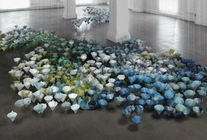

Christel Dillbohner: Ice Floe Exhibition: August 8 - September 20, 2009 Download the press release
|
 |
Coming to the San Jose Institute of Contemporary Art (ICA) in August 2009 is a solo exhibition featuring a large-scale installation, and multi-media prints and paintings by artist Christel Dillbohner. Referencing the melting glaciers of the Arctic and Antarctic regions, Dillbohner’s Ice Floe presents a visual exploration of humanity’s impact on the natural environment. Ice Floe opens on August 8th and runs through September 20th in the ICA’s Focus Gallery and Cardinale Project Room. An opening reception will be held on August 7th. Additionally, an Artist Reception and Artist Talk is planned for Monday, August 10th from 6pm to 8pm at the Hotel Montgomery in downtown San Jose.
Dillbohner’s large sculptural installation Ice Floe will consume the ICA’s Focus Gallery, inviting viewers to navigate their way around the space. The work is comprised of thousands of suspended cone-shaped objects dipped in shades of blue, white and green wax and hovers just above the floor to create an immersive environment reminiscent of a majestic arctic landscape. The piece is intended to suggest a parallel between the physical landscape, created over millions of years by the movement of earth, wind, and water, and our own inner landscapes, formed by layers of personal experiences gathered over the course of a lifetime.
In addition to exploring the ways in which human behavior has damaged the environment, Ice Floe reflects the Artist’s interest in human relationships with the landscape. “Christel is fascinated with the people who live in harsh arctic locales as well as the human desire to explore these mysterious lands,” explains ICA Executive Director and Chief Curator, Cathy Kimball. “This work draws on Christel’s observations of the quiescency of the arctic landscape, an environment that is noticeably changing and is in danger of being lost to future generations.”
A series of mixed-media monoprints referencing the environmental and cautionary themes explored in the exhibition will also be on view in the Cardinale Project Room. These works were created by Dillbohner as part of her recent residency at the ICA’s Print Center.
Also on view at the ICA this summer is the 15th Annual Monotype Marathon Print Exhibition which runs from July 1st through July 18th. This popular exhibition features monotype prints created by over seventy-five Bay Area printmakers. The prints will be auctioned at a fundraising party on July 18th at the ICA. NextNew:Green on view from July 7th through September 20th features the work of nine emerging Bay Area artists surveying fresh perspectives on climate change and related environmental and conservation issues. From June 30th through September 30th, Night Moves, after-dark programming in the ICA’s front windows, presents Gail Wight’s National Agenda – a video art piece that is part eco-political activism and part Theater of the Absurd.
Christel Dillbohner: Ice Floe is funded in part by Applied Materials Excellence in the Arts Grants, a program of Arts Council Silicon Valley. Additional support provided by the James Irvine Foundation.
# # #
San
Jose Institute of Contemporary Art 560 South First Street San Jose, CA 95113 tel (408) 283-8155 fax (408) 283-8157 |